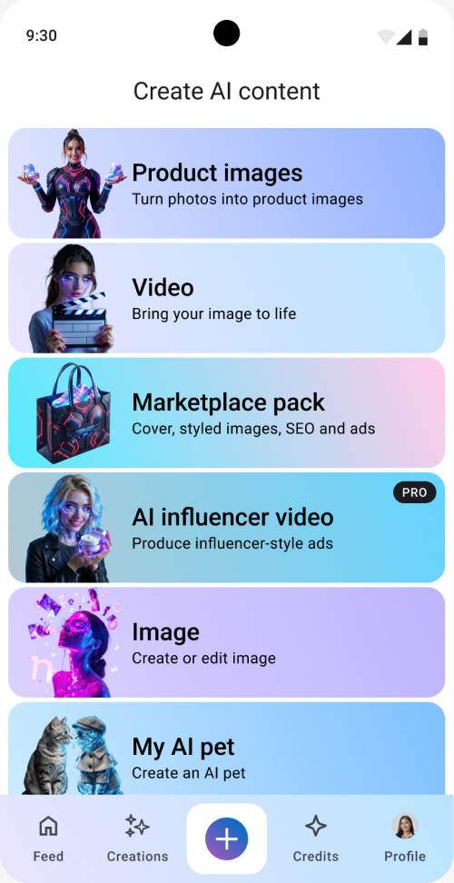
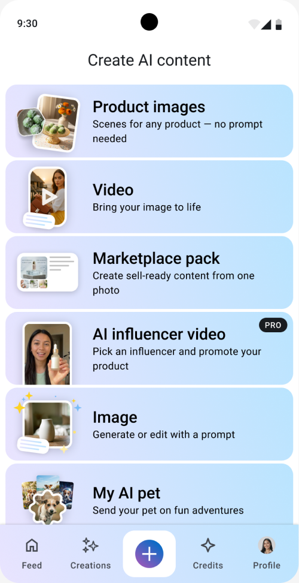

Context
Lakku is a mobile app with AI tools for creating visual content, including product images and ads for small businesses in Indonesia. Its Create menu brings seven tools together: product images, video, marketplace content, AI influencer videos, image creation and editing, AI pets, and digital twins:

This case focuses on one small but important part of the experience: choosing where to start.
The problem
Product Images and Image could look like similar options. Both create images, but they offer different ways to work.
In Product Images, a seller can use ready-made scenes to create images of their product without writing a prompt. Image is a more flexible tool for creating or editing images with a prompt:

Before the update, ready-made scenes accounted for 67% of generated content, while Image Generation accounted for 27%. Both routes were being used, but these numbers could not tell us whether people understood the difference.
The responses about the old menu showed a more specific problem. Some people described Product Images as a tool for creating images from text. They expected a prompt-based tool, even though this option offered ready-made scenes.
The old menu did little to explain this difference. Several cards used fantasy AI characters. They gave the menu a strong visual style, but did not show the result a person could expect.
The design brief asked for contextual thumbnails and descriptions that explained the value of each tool. I focused on showing the result and making the difference between ready-made scenes and prompt-based creation more explicit.
Showing what the tools make
First of all, I changed the card illustrations to show examples of the content people could create.
Product Images showed a product photo and a styled result. Marketplace pack showed a set of product materials. AI influencer video showed a person presenting a product, and so on.
I kept the seven options in the same order. The work focused on the images and descriptions within the existing menu. I softened the color scheme and used a calm gradient for each item:

Testing the first click before release
Before releasing the menu update, I ran a first-click test on the old and new versions. The screens were in Indonesian, with 15 participants for each version.
The intended destination was Image, labelled “Gambar” in Indonesian. I wanted to check whether people could find this tool and distinguish it from Product Images:

The two heatmaps showed different click patterns. In the old version, clicks appeared on Image, Product Images, Video, and AI influencer video. In the new version, the main cluster was on Image — the intended option for this task. This suggested that the new examples and descriptions helped people find the relevant tool, although some still chose other options.
We treated this as an early positive signal and decided to move forward with the release, then monitor how people used the tools.
Results after release
I compared the analytics for the week before and the week after the release.

The three scene categories within Product Images accounted for 67% of generated content before the release and 72% after it.
Image Generation’s share fell from 27% to 20%. This was the direction we were aiming for: we wanted sellers who needed product images to find ready-made scenes in Product Images, without having to write a prompt. The shift in generated content was consistent with that goal.
What I learned
The comparison showed how closely a card’s illustration and description need to work together. An example can help explain a tool, but it can also look like a finished asset that the user can simply choose.
For Product Images, showing an attractive result was only part of the explanation. The card also needed to communicate that the user could bring their own product and use a ready-made scene.
Testing before release helped me check whether the changes guided people towards the intended tool. The first-click heatmaps showed a more focused pattern in the new menu. For me, the lesson was to test my assumptions early and be clear about what the test could actually confirm.